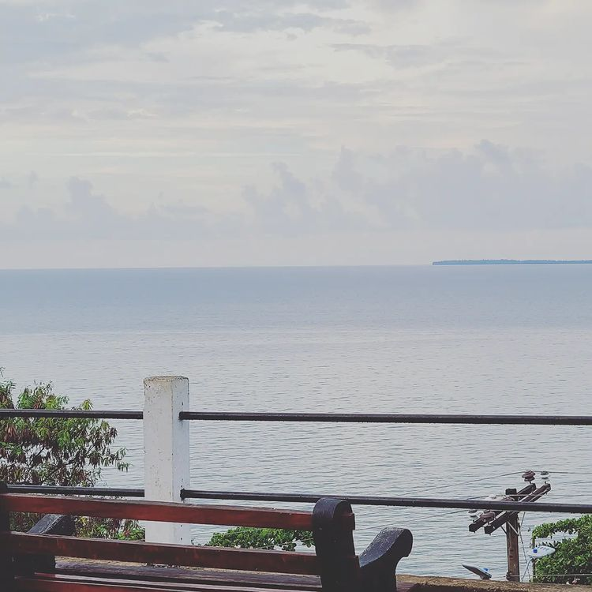

Santa Bárbara Fortress
This structure reflects the colonial heritage of the Spanish in our country. It has a large number of cannons, military vestiges, weapons from the colonial era, among others. The Santa Bárbara fortress is built on a hill in Trujillo, from which you can perfectly see the port, the bay and the Caribbean Sea. The first defensive row is the remains of some walls in which even the artillery cannons are placed in the direction of the bay. Next, there are higher walls and flanking towers that served as shelter for the Spanish soldiers. The command headquarters is in center. There is also a section of the fortress that has chairs so visitors can enjoy the amazing view of Trujillo Bay. This section is called: 'the watcher'
Guaimoreto Lagoon
Guaimoreto Lagoon is located in the Atlantic zone of Honduras, only 3 km away from the city of Trujillo, department of Colón, Honduras. The Guaimoreto Lagoon is a brackish water lagoon that has an approximate surface area of 36.57 km². Its shallow waters flow into the Bay of Trujillo through a channel of about 30 to 40 meters wide and also has many channels that facilitate navigation and exploration. The Guaimoreto Lagoon Wildlife Refuge is made up of extensive mangrove forests and wetlands, which form a perfect site that has become the permanent habitat of a great variety of fish and seabirds and is the refuge of other migratory species that arrive in the area during the winter.